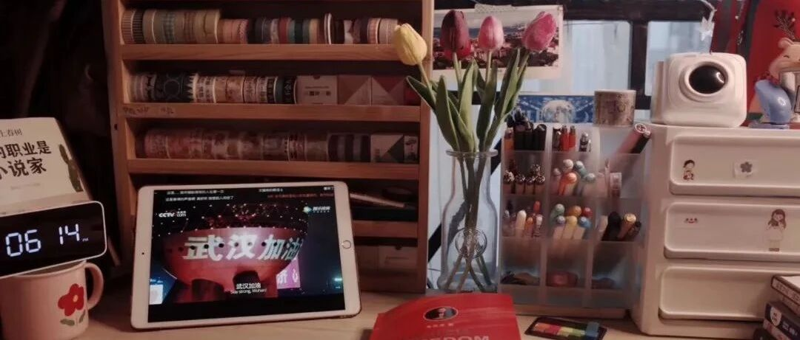

分享｜这些高效学习法，让你效率提升300%
和 我 一 起 治 愈 生 活

图：@网络
文：@秋秋
大家好，我是秋秋。
这篇文章应该要感谢我男朋友——大老王。有一天他听了一个学习课，里面介绍了很多学习方法，他虎躯一震，感觉是打开新世界大门。
所以我想这些方法也要分享给大家，不管对于工作、学习，都能大幅度提升你的效率～
如果你以前不知道，那这次可以收藏实践起来～如果早有耳闻，那我们一起探讨下它高效的原因以及适用情况叭～
1.费曼学习法🌲

这个方法一句话概括就是：将你学到的复述出来，讲的越多你学到的也越多。
创始人理查德费曼本身就是一个传奇。
13岁学完微积分，高中毕业（没有经历大学）就进入麻省理工。他的学习方法，也被称为效率最高的学习方法。

但是第一次听这个方法很奇怪，讲题等于学习？那是不是说话也能学习了？（你肯定也有这个疑问🤔️）那我从心理学角度讲一下为什么它这么高效：
在心理学的角度，我们把学习分为2种：主动学习和被动学习。
主动学习：有意识的学习，对知识进行深加工。比如讨论、提问、实践、教授知识给他人。
被动学习：无意识学习，对知识的加工停留在表层。比如上课听讲、看书、看网课这些都属于被动学习。
而费曼学习法就属于主动学习。

看似你在别人讲题，其实你已经对知识进行了理解、深加工。再通过语言教授他人，知识对你可谓是融会贯通。
它的操作方法也很简单：
1.自己先去学习一个知识点；
2.盖住知识不断进行复述；
3.将知识点讲授给他人；
4.不断回答别人的问题，直到能把该知识完全讲透。

大家平时可以刻意训练这种学习方法，不会感觉很累又很高效。
2.西蒙学习法💻
诺贝尔经济学奖获得者，西蒙教授曾提出的一个理论：“对于一个有一定基础的人来说，只要真正肯下功夫，在6个月内就可以掌握任何一门学问。”
西蒙学习法，就来源于这句话。

所以这个学习方法的核心理念就是：短时间、集中全力在某一个学科上。非常适合突击某个学科或考证。
那么为什么是6个月？
西蒙研究成果表明：一个人1分钟到1分半钟可以记忆一个信息，心理学把这样一个信息称为“块”，那么每一门学问所包含的信息量大约是5万块，大约需要1000个小时，以每星期学习40小时计算，要掌握一门学问大约需要用6个月。
这种短时间高效学习的好处就是：省去了大量复习时间。

就像你烧一壶开水，如果断断续续地烧，1万个小时也烧不开，如果连续烧，1个小时就够用了。
所以我也建议大家在学习某种技能的时候，最好是6个月就搞定。战线太长，来来回回复习也很占用时间。
操作方法：
1）选择一门学科
2）拆分这门学科，分为每一个小部分，持续学习6月
3）逐步击破每个被拆分的小部分
4）掌握这门学问，开启下一个技能
不过这个方法不适合大学以前的小初高学习，只针对一些具体技能～大家要根据自己的情况使用。
3.番茄工作法🍅

这个大家应该都不陌生，之前抖音也发过两次视频教程（抖音：秋秋很开心）。
它的方法简单来说就是：把一件事情拆分成几个25分钟，每学习完25分钟就休息5分钟。
原因是：研究表明，当人们做一件事超过25分钟，将会走神，所以每隔25分钟休息一次，学习效率会大幅度提高。
使用方法：
我用的是极简时钟，这个app比较简洁没有广告，学到25分钟自动提醒。

首先，你要写下你想完成的任务，
比如学英语2h，那就是5个番茄钟。
然后开始学习，直到25分钟后闹钟响起，这时候可以休息5分钟；
最后休息后继续开始下一个番茄，直到完成全部任务。

注意：一个番茄只有25分钟，这段时间你要保持绝对高效，如果做与任务无关的事情，番茄就作废。
使用番茄工作法的好处：
一次只做一件事，保持专注；
按照轻重缓急程度分解目标任务，高效完成；
做完一件划掉一件，增加成就感，避免半途而废；
整理杂乱无序的工作事项，克服拖延症；
持续性改善时间管理能力，让优秀成为一种习惯。
但是我曾经用过一段时间，我的感受就是中间休息5分钟其实不太现实，很容易玩起手机。
所以我还是比较喜欢大块的时间用来学习，因此这个方法因人而异🍅。
4.SQ3R阅读法📖

这个方法在中国用的很普遍，尤其是语文课。只是我们一直不知道这个方法叫做SQ3R学习法（默默用了很多年）。
这个学习方法，最早是由罗宾逊提出来的，盛行于美国大专院校。
SQ3R分别代表：浏览（Survey）、提问（Question）、阅读（Read）、背诵（Recite）、复习 (Revise）。

如果你从头到位阅读一本书，很容易花费大量时间，并且看完就忘，所以用这个方法效率就会很高。
使用方法：
1浏览：先去把一本书的框架看完（就是老师说的浏览全文）
2发问：标记你感兴趣的问题，带着困惑去读书（哈哈，小时候老师经常说）
3阅读：开始读书
4复述：用自己的话总结章节（有时候要背诵）
5复习：定期复习，才能不遗忘。
我使用的感受就是，阅读工具书的时候特别适合使用，但是阅读文学作品尤其是小说，那千万别用这种方法。
否则，你将会有种做阅读理解的感觉......
5、思维导图法🍑
思维导图这个方法我就不多说了，之前专门写过一篇文章，大家 点这里 就可以跳转。
我认为思维导图是一种非常好的学习方法，包括现在写作我也是用思维导图先把大纲整理出来。

有时候我们经常做事毫无头绪，就是调理不够清晰，思维导图就可以帮助你培养清晰的思考总结方式。
最后，写下这篇文章是因为也想给自己的学习方法做一次总结，也希望能够让大家了解并且探索出适合自己的学习方法～

☕️
✨说一件很有意思的事情，我因为经常分享学习的干货，后台也有人问我：那你成绩怎么样啊？
其实我想说，现在的我已经工作了。从这个角度再看，我不觉得学习是到了某个年龄就要停止的事情，不是说你上完大学之后工作就不用学习了。
还有就是，成绩好真的只是一个单一的考量，虽然我一直成绩都不算差，但是长大后我才发现想法、爱好、明确的喜欢，比单纯的成绩好更重要。
我一直庆幸的是我从小就知道我长大想做什么这件事，而不是上学排名靠前这件事。
为了喜欢而努力是件快乐的事，希望大家看完文章能有收获，并且能有个贯穿一生的目标。
下期见啦～
其他文章推荐：

原创文章，转载请告知本人并标注来源
工作联系：17865514429 （微信）
请注明来意 :)
@微博：秋秋一日甜
喜欢记得星标，让我们一起成长